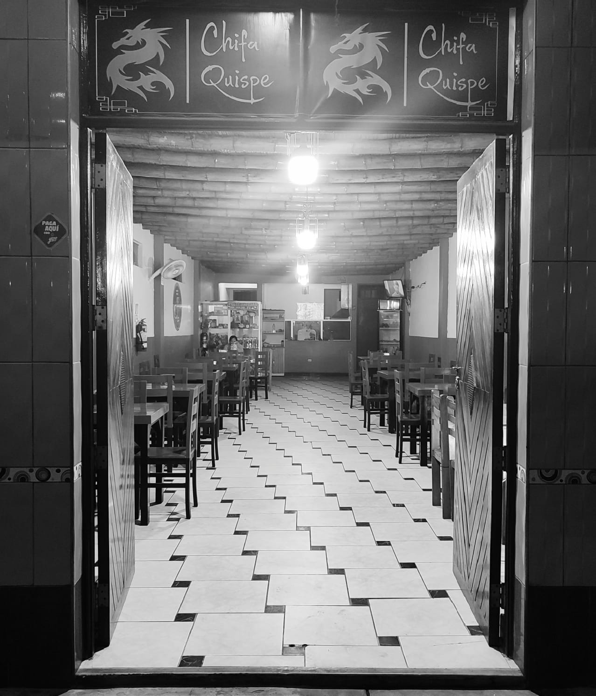

- Av. Tupac Amaru Mz.13 Lt.4, Tupac Amaru Inca, Perú
- Jue - Mar : 12:00 pm a 11:00 pm
Visitanos
- Av. Tupac Amaru Mz.13 Lt.4
Tupac Amaru Inca, Perú - Jue - Mar : 12:00 pm a 11:00 pm
contacto

Visitanos
- Av. Tupac Amaru Mz.13 Lt.4
Tupac Amaru Inca, Perú - Jue - Mar : 12:00 pm a 11:00 pm
Llámanos al
Chifa Quispe
Nosotros

Chifa Quispe
Cada sabor cuenta una historia
Chifa Quispe, en Tupac Amaru Inca, Pisco, tiene sus raíces en la pasión por la gastronomía nacional y su fusión con la culinaria oriental, permitiendo que desde su apertura, seamos reconocidos con un referente local en esta nuestra gastronomía y un mienbro más de sus familias, ofreciendo a nuestros comensales momentos inolvidables. Con un equipo dedicado y una visión innovadora, donde cada plato cuenta una historia de sabor y cada visita es una experiencia única.
Chifa Quispe comenzó como un modesto puesto callejero de comida situado a la salida interprovincial de Ayacucho. Con el tiempo, gracias a un progresivo crecimiento y ahorros acumulados, la empresa decidió formalizarse. En octubre de 2021, abrieron oficialmente sus puertas en la dirección Av. Tupac Amaru Mz 13 Lt 4, en el distrito de Tupac Amaru Inca, provincia de Pisco, departamento de Ica. Desde entonces, han estado ofreciendo servicios de comida chifa, logrando aumentar gradualmente su popularidad y estableciendo una sólida presencia en el mercado.
Nuestra misión en CHIFA QUISPE es ofrecer a nuestros clientes una experiencia culinaria única, fusionando la tradición de la comida chifa con un servicio de calidad y un
ambiente acogedor. Buscamos satisfacer los gustos más exigentes con platos elaborados con los mejores ingredientes, brindando siempre un trato cordial y un servicio excepcional. Nos comprometemos a seguir innovando y mejorando para mantenernos como líderes en el sector de la gastronomía, creando momentos memorables para nuestros clientes en cada visita a nuestro establecimiento.
En CHIFA QUISPE, visualizamos un futuro donde nuestra marca sea reconocida como el referente indiscutible de la auténtica experiencia chifa en el Perú.
Nos proyectamos como el destino gastronómico de preferencia para aquellos que buscan deleitar sus sentidos con la fusión perfecta entre la tradición culinaria china y la riqueza de los sabores locales. Aspiramos a expandir nuestra presencia a nivel nacional e internacional, manteniendo siempre nuestros estándares de calidad y servicio impecables. Nos vemos como agentes de cambio en la industria, impulsando la innovación y elevando constantemente la barra para ofrecer experiencias culinarias incomparables que perduren en la memoria de nuestros clientes.